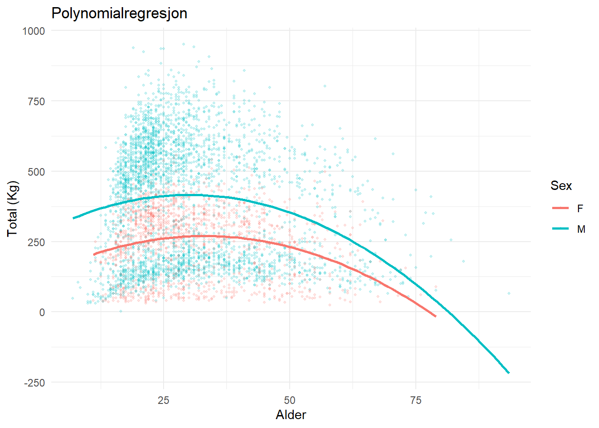

powerlifting.clean <- openpowerlifting |>
filter(
!is.na(TotalKg), #Har en registrert total
TotalKg > 0,
Equipment == "Raw", #Utstyrsfritt
!is.na(Tested), #Dopingtestet
Sex %in% c("M", "F"), #Kun kvinner og menn
!is.na(Dots))Arbeidskrav 3: Statistisk analyse av Openpowerlifting datasettet
openpowerlifting <- read.csv(“C:/Users/ketil/Downloads/openpowerlifting.csv”)
1 Beskrive sammenhenger
Første del av arbeidskravet tar utgangspunkt i “Openpowerlifting” datasettet.
Begreper som brukes videre i denne analysen:
Total: Summen av beste løftet i knebøy, benkpress og markløft sammenlagt, uttrykt i antall kilogram (eksempel: 150kg knebøy, 100 kg benkpress, 200 kg markløft = total på 450 kg)
Maksimalstyrke: Brukes synonymt med total i denne analysen
Utstyrsfritt: Det innebærer at man kun kan bruke et enkelt lag løftebelte (10 - 13mm bredde), myke knevarmere, håndleddsstøtter og drakt uten støtte. Alt annet utstyr er ikke tillatt.
1.1 Sammenhengen mellom to kontinuerlige variabler (Total og krosppvekt)
1.2 Sammenhengen mellom total, kjønn og alder
Det er godt etablert at både kjønn og alder har en effekt på maksimalstyrke. Menn løfter i gjennomsnitt med kvinner, og alder kan ha både en negativ og positiv innvirkning på maksimalstyrke.
Fra et fysiologisk standpunkt kan vi anta at det vil være et kurvilineært forhold mellom total, kjønn og alder, ettersom man vil bli sterkere opp til en viss alder, før man senere vil bli svakere igjen. Vi vil også forvente at menn og kvinner vil registrere ulike totaler på bakgrunn av ulik styrke.
Siden “openpowerlifting” datasettet inneholder over tre millioner rader, må vi filtrere dataene slik at de er mer håndterbare å lage modeller og grafer med. Vi valgte dermed å filtrere et utvalg på 5000 observasjoner.
Vi testet både en lineær og en polynomial regresjonsmodell. Det viste seg at den polynomiale modellen var mer passende, ettersom den lineære modellen viste en negativ korrelasjon mellom alder og total, som er fysiologisk svært usannsynlig (en 15-åring ville vært sterkere enn en 25 åring i gjennomsnitt med denne modellen). Ved bruk av den polynomiale modellen derimot, ser at vi styrken øker med økende alder til et visst punkt, før den igjen synker, og indikerer at det er et kurvilineært forhold.
#Filtrerer datasettet slik at det er mer håndterbart og gjelder en mer homogen målgruppe
powerlifting.clean <- openpowerlifting |>
filter(
!is.na(TotalKg), #Har en registrert total
TotalKg > 0,
Equipment == "Raw", #Utstyrsfritt
!is.na(Tested), #Dopingtestet
Sex %in% c("M", "F"),#Kun kvinner og menn
!is.na(Dots)
)
#Vi tar et tilfeldig utvalg "powerlifting.clean"
set.seed(123)
sample.powerlifting <- powerlifting.clean |>
sample_n(5000)Nå som vi har filtrert datasettet, kan vi lage en regresjonsmodell og en graf.
Merk: Med denne regresjonsmodellen gjør vi en antagelse at alder har en lik effekt på maksimalstyrke uavhengig av kjønn
Call:
lm(formula = TotalKg ~ Sex + Age + I(Age^2), data = sample.powerlifting)
Residuals:
Min 1Q Median 3Q Max
-381.39 -178.01 31.77 138.74 543.95
Coefficients:
Estimate Std. Error t value Pr(>|t|)
(Intercept) 124.54315 18.32792 6.795 1.23e-11 ***
SexM 143.82175 6.16975 23.311 < 2e-16 ***
Age 9.55345 1.02880 9.286 < 2e-16 ***
I(Age^2) -0.15465 0.01342 -11.520 < 2e-16 ***
---
Signif. codes: 0 '***' 0.001 '**' 0.01 '*' 0.05 '.' 0.1 ' ' 1
Residual standard error: 184.8 on 4354 degrees of freedom
(642 observations deleted due to missingness)
Multiple R-squared: 0.146, Adjusted R-squared: 0.1454
F-statistic: 248.1 on 3 and 4354 DF, p-value: < 2.2e-16| Variabel | Estimat | p-verdi |
|---|---|---|
| (Intercept) | 124.543 | <0.001 |
| SexM | 143.822 | <0.001 |
| Age | 9.553 | <0.001 |
| I(Age^2) | -0.155 | <0.001 |
1.2.1 Tolkning av regresjonsmodellen
Vi ser fra modellen at skjæringspunktet er 124.5 kg, som betyr at gjennomsnittlig kvinne vil ha en total på 124.5 kg ved en alder av 0. Dette er det matematiske utgangspunktet til modellen, og i praksis ikke nyttig og unøyaktig siden datasettet ikke inneholder data på så unge utøvere. Vi ser også at menn i gjennomsnitt løfter 143.8kg mer enn kvinner, og at for hver økning i alder med antall år, vil vi få en økning på 9.6kg på totalen. Koeffisienten for Age^2 (-0.15) viser at det er et ikke lineært forhold mellom alder og maksimalstyrke. Etter en viss alder, så vil styrken avta.
Alle koeffisientene har en p-verdi på <0.001, som betyr at både kjønn og alder har en statistisk signifikant effekt på styrke. Modellen kan forklare omtrentlig 14% av variasjonen i total vekt løftet (Justert R-squared = 0.14), som tyder på at andre faktorer enn kjønn og alder spiller inn på maksimalstyrke.
1.2.2 Figur 1: Kurvilineær graf av sammenhengen mellom total, kjønn og alder
Figur 1: Figuren viser hvordan totalen varierer med alder for menn og kvinner, og når en topp rundt en alder av 30 -35 år, før den gradvis avtar.
